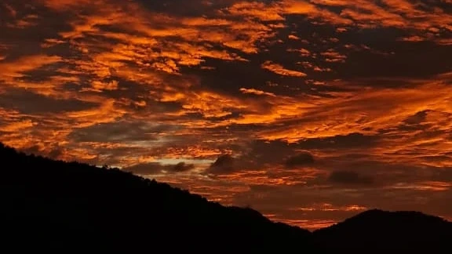

Essay · Life
Why Write When Time Will Pass Anyway?
“Write”, my mother would say when I couldn’t dissect my feelings and “Write slowly” is what she would say as I scribbled every nonsensical paragraph after another. She realised I had a knack for it, as did I, much later.
All writings 12 pieces

Memoir · Travel
Postcards from a City That Doesn't Sleep
A wanderer's notes on Colombo — written between cups of strong tea and sudden rain that smells of jasmine and iron.

Reflection · Life
The Art of Letting Things Be Unfinished
Not everything needs a conclusion. Some thoughts are better left growing wild at the edges, untrimmed and unresolved.

Essay · Nature
What the Rain Taught Me About Patience
Monsoon season in the tropics is not a pause in life — it is life, loud and insistent, reshaping everything it touches.

Memoir · Books
The Library at the End of the Lane
A small building, half-forgotten, filled with books that smelled like other people's afternoons — and how it made me a reader.

Travel · Essay
Notes from an Unnamed Road in the Hills
There are roads that don't appear on maps, and they are always the most important ones — the kind found by accident, kept by heart.

Nature · Life
Sunrise as a Form of Hope
We speak of new beginnings at midnight — but the real start of a day is that first blush of gold against the dark, before even the birds have woken.